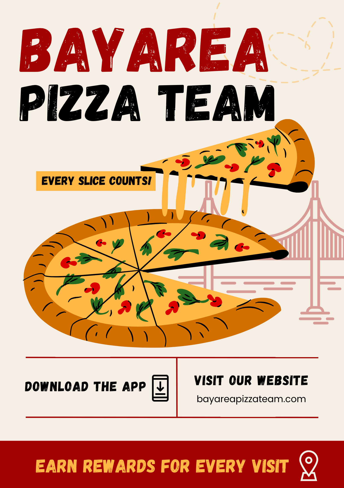
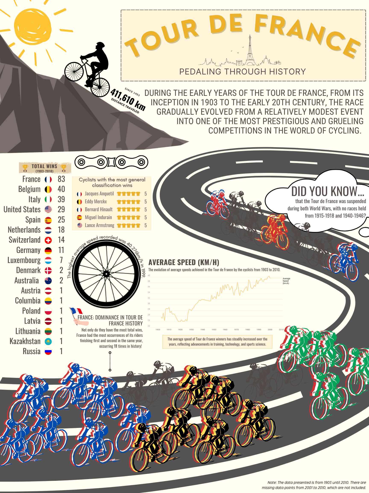

Competency F
Use the basic concepts and principles related to the selection, evaluation, organization, and preservation of physical and digital information items.
Introduction
Through my studies, I have gained a deeper understanding of how information structure and organization are essential to designing, querying, and evaluating information retrieval (IR) systems. Bates (1999) emphasizes that the complexity of information organization is often overlooked by those outside the field, yet it plays a crucial role in the functionality of databases, search engines, and library catalogs (OPACs). The way information is structured shapes how users may navigate systems, influences search effectiveness, and determines the accessibility of relevant materials. Well-designed systems not only store information but also support efficient retrieval by incorporating logical organization, clear navigation, and user-friendly interfaces. Understanding these principles is essential for developing retrieval systems that meet user needs and improve access to information (Bates, 1999).
Design
Designing an IR system involves converting content into terms that can be searched, according to the needs of the users and the goals of the system. Rowley and Hartley (2008) point out that decisions about defining fields and values are key to making sure information can be found easily. These decisions directly affect how users interact with and move through the system, impacting their experience. For example, a search engine or library catalog needs to have a well-organized system of fields (e.g., author, title, subject) to make sure search results are relevant. Having good design principles, such as simplicity and clarity, can also help make systems easier to use, which is important for effective querying (Krug, 2014).
Query
Effective querying requires an understanding of how information is structured within a system and the ability to adapt search strategies accordingly. Weedman (2018) explains that different IR systems, whether bibliographic databases, search engines, or social media platforms, operate with distinct frameworks that influence how searches are conducted. Users must navigate these structures—such as controlled vocabularies, authority control, or tagging systems—to refine their searches and locate relevant information efficiently. As information professionals, it is important to recognize these variations and apply appropriate search strategies to optimize retrieval. Overall, querying is more than just entering search terms; it involves understanding how a system processes and retrieves information to produce meaningful results (Weedman, 2018).
Evaluate
When we discuss evaluating an IR system it means assessing how well it retrieves relevant information while excluding irrelevant results. As mentioned, key measures for evaluating performance are recall (retrieving all relevant documents) and precision (retrieving only relevant documents), which Kuhlthau (2004) identifies as important for system effectiveness. Rowley and Hartley (2008) also stress that classification and organization within the system are essential for meeting user needs. The organization system—whether hierarchical, classified, or based on controlled vocabulary—greatly affects how well the system can retrieve relevant documents. Another part of evaluating usability also involves checking the findability of information, which helps make sure the system is both efficient and user-friendly. Together, design, querying, and evaluation principles help us create an IR system that would hopefully work well for its users (Kuhlthau, 2004; Rowley & Hartley, 2008).
Evidence
Group Project: Pizza Database (INFO 202)
 In the Information Retrieval System Design (INFO 202) class, I worked on a group project where we designed a searchable database for pizza shops in the San Francisco Bay Area. Our goal was to create a comprehensive, user-friendly tool that allows people to explore pizza options based on their preferences such as style, toppings, dietary restrictions, and price range. With the Creator role in the group, I was responsible for creating the Caspio database. Caspio is a no-code platform that allows users to build and deploy custom online databases without programming skills. I structured fields such as “Restaurant,” “Location,” and “Style of Pizza,” among others so that the data was consistent and accurate by developing clear instructions for input and formatting. Additionally, I helped with the aesthetic design of the database, making sure it was not only functional but also visually engaging. I utilized Canva to create a flyer for our fictional application, which the pizza database made on Caspio would have been used for. This experience allowed me to apply my knowledge of information organization and indexing principles in a practical setting while learning how to manage a project that directly served the needs of a specific user group. The project also highlighted the importance of clear definitions and user-friendly interfaces in creating effective information systems.
Assignment #3 : Storytelling with Information Visualization (INFO 246)
 For my second piece of evidence, I selected the Assignment #3 : Storytelling with Information Visualization from my Information Visualization (INFO 246) course. The assignment involved creating a visual representation of historical data from the Tour de France (1903-2010), noting key trends and making the data more engaging. I used a Microsoft Excel sheet as the foundation, employing Datawrapper and Canva to retrieve, organize, and present the information. The data was structured into visually distinct sections with color coding to highlight key themes, such as top teams and race milestones. I made this decision to enable an engaging exploration of trends like the upward trajectory of cyclists' average speeds with the viewers. By using Datawrapper to create a line chart and organizing the data effectively, I made sure that the final product was both informative and easy to navigate from a user-directed experience. I also identified key data points, such as changes in cyclists' average speeds, to emphasize the impact of bike technology, terrain changes, and external events on the race. This project tested my ability to analyze, organize, and present complex data in a visually coherent and engaging format.
Group Project: Website Reorganization Report (INFO 202)
The third artifact I have selected is my group project for INFO 202, where we were tasked with evaluating and redesigning The Vermont Country Store's Christmas tab. My responsibility was to design the existing site map and create a redesigned version using Microsoft Visio to visually represent the website’s hierarchy. Additionally, I analyzed the site’s structure and suggested improvements, including the consolidation of overlapping categories to streamline the user experience. Specifically, I proposed changing the term “Holiday” to “Christmas” in several categories to clarify the site’s focus and reduce confusion for users searching for other holiday-related items. I also recommended simplifying titles like “Festive Food” to “Christmas Food” for consistency across the site.
This project is a strong demonstration of my competency in designing and evaluating information systems, as it required me to apply usability principles to a real-world website and evaluate its structure. The changes I proposed aimed to improve category consistency and made the information retrieval process more intuitive, while focusing on how to enhance the user experience. Using Visio to redesign the site map allowed me to represent the system's structure visually, aligning with the goal of clear communication. These changes contributed to making the website more user-friendly and efficient, reflecting my understanding of organizing and presenting information in a way that focuses on accessibility for users.
Conclusion
In an era marked by social fragmentation and ideological polarization, libraries must remain steadfast as bastions of intellectual freedom and inclusivity. They are responsible for providing access to diverse viewpoints, even those that challenge dominant narratives, as this aligns with the profession's core commitment to the free exchange of ideas. While libraries do not need to endorse every perspective, they must defend patrons' right to explore and engage with a broad spectrum of ideas. By upholding these values, libraries strengthen their identity as inclusive, intellectually vibrant spaces for lifelong learning, critical inquiry, and civic engagement. To fulfill this role, libraries must address service gaps and create environments where all patrons feel valued and represented. Developing cultural competence among library professionals makes sure that services meet the needs of the communities (Cooke, 2016). Thoughtful program design and meaningful engagement promote inclusivity and provide opportunities for personal growth (Allard, Mehra, & Qayyum, 2007). It is through these efforts that libraries can become powerful catalysts for curiosity and learning.
References
- Bates, M. J. (1999). The invisible substrate of information science. Journal of the American Society for Information Science, 50(12), 1043-1050.
- Brown, C. C., & Bell, S. S. (2018). Librarian's guide to online searching: Cultivating database skills for research and instruction (5th ed.). Libraries Unlimited.
- Kuhlthau, C. C. (2004). The Information Search Process: A Summary of Research and Implications for Information Literacy. In Information Literacy: A Concept for the Digital Age (pp. 37-49).
- Weedman, J. (2018). Information retrieval: Designing, querying, and evaluating information systems. In K. Haycock & M.-J. Romaniuk (Eds.), The portable MLIS: Insights from the experts (2nd ed., pp. 171-186). Libraries Unlimited, an imprint of ABC-CLIO.
- Rowley, J., & Hartley, R. (2008). Organizing and Accessing Information. In Organizational Design for Information Systems (pp. 67-84). Ashgate Publishing.
- Krug, S. (2014). Don't Make Me Think: A Common Sense Approach to Web Usability (3rd ed.). New Riders.